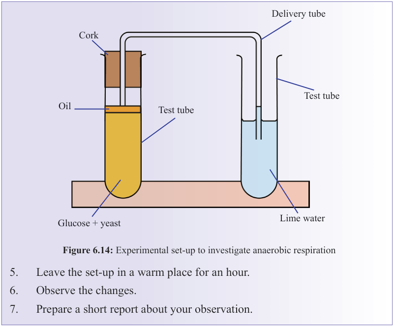
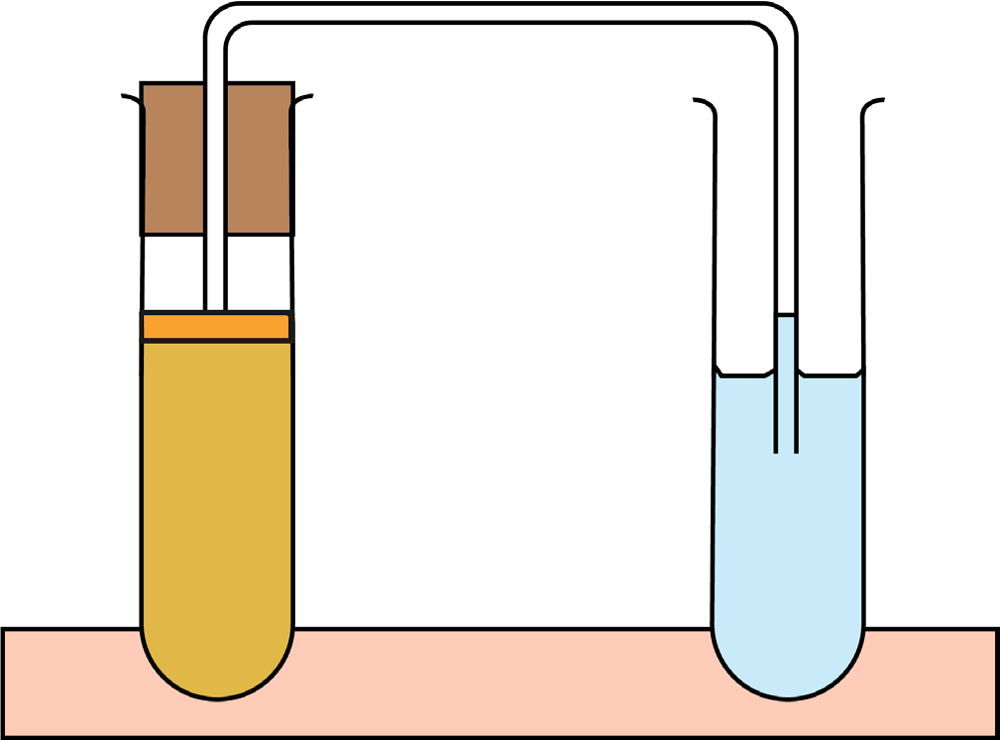

146
Student’s Book - Form Two
Biology for Secondary Schools


Delivery tube
Cork
Oil
Test tube
Glucose + yeast
Test tube
Lime water
Figure 6.14: Experimental set-up to investigate anaerobic respiration
5.
Leave the set-up in a warm place for an hour.
6.
Observe the changes.
7.
Prepare a short report about your observation.
Table 6. 5: Differences between aerobic and anaerobic respiration
Aerobic respiration
Anaerobic respiration
(a)
Oxygen is used
(a)
Oxygen is not used
(b)
Large amount of energy is produced (b)
Little energy is produced
(c)
Water is produced
(c)
Water is not produced
(d)
Food substances are completely broken down
(d)
Food substances are not completely
broken down
(e)
It starts in the cytoplasm and ends in the mitochondria
(e)
Takes place in the cytoplasm
(f)
Carbon dioxide and water are the end-products
(f)
Lactic acid is produced in animals and alcohol is produced in plants
Factors affecting the rate of respiration
The rate at which respiration takes place varies depending on the state of an organism or that of the environment. Hence, respiration is sometimes fast and at other times slow. The factors affecting the rate of respiration are presented below.
08/04/2026 10:18:38